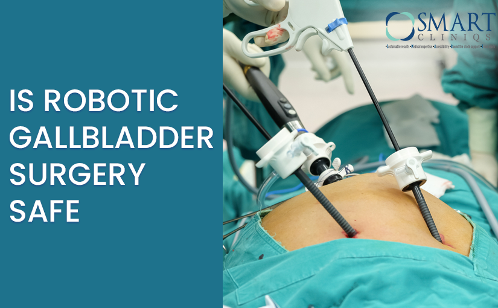

Understanding Gallbladder Surgery: A Surgeon's Perspective
General Health Dr. Atul Peters

Understanding Gallbladder Surgery: Why Laparoscopic Cholecystectomy is the Preferred Choice
The gallbladder may seem small, but it plays a big role in our digestive system. Picture it as a pear-shaped storage unit for bile, a digestive fluid produced by the liver. Its job is to store and concentrate bile before releasing it into the small intestine to help with digestion.
However, when things go awry with the gallbladder, it can cause quite a bit of trouble. Gallstones, which are hard deposits that form in the gallbladder, can lead to discomfort, pain, and even serious complications if left untreated.
So, what's the solution when gallbladder issues arise? Well, oftentimes surgery becomes necessary. Known as cholecystectomy in medical speak, gallbladder surgery is recommended for conditions like gallstones, gallbladder infections, polyps, or even cancer.
There are two main methods for performing gallbladder surgery: laparoscopic cholecystectomy and open cholecystectomy.
Laparoscopic cholecystectomy is the go-to option in most cases. It involves making small incisions and using specialized instruments, including a camera that provides a clear view of the surgical area. This approach offers benefits like shorter recovery times, less postoperative pain, and minimal scarring.
On the other hand, open cholecystectomy requires a single large incision in the abdomen to access and remove the gallbladder. While effective, it comes with downsides such as longer operative and recovery times, as well as a larger scar.
So, why choose laparoscopic over open surgery? Well, it's less invasive, causing less trauma to surrounding tissues and resulting in quicker recovery times. Plus, who doesn't appreciate the cosmetic benefits of minimal scarring?
In Delhi, gallbladder surgery is commonplace in hospitals across the city, with advancements making it safer by the day. Dr. Atul NC Peters, Director of Minimal Access, Metabolic and Bariatric Surgery at Max-Smart Super-Specialty Hospital in Saket, Delhi, emphasizes the advantages of laparoscopic cholecystectomy. From shorter hospital stays to reduced risk of complications, this minimally invasive procedure offers patients a smoother path to recovery.
And here's a sobering fact: ignoring gallstones, especially large ones, can increase the risk of gallbladder cancer. Even smaller stones can cause serious complications like jaundice and pancreatitis if left untreated.
So, if you're experiencing gallbladder issues, don't wait. Consult with a surgeon to explore your options and get back to living your life pain-free. We at Smart Cliniqs have the best gallbladder surgeon in Delhi.
Back to Blog
EMERGENCY
24/7